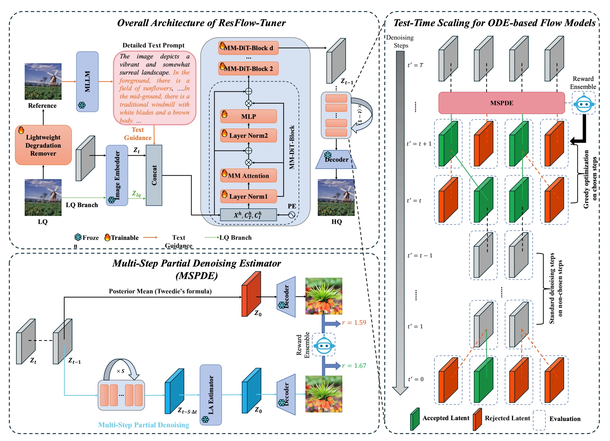
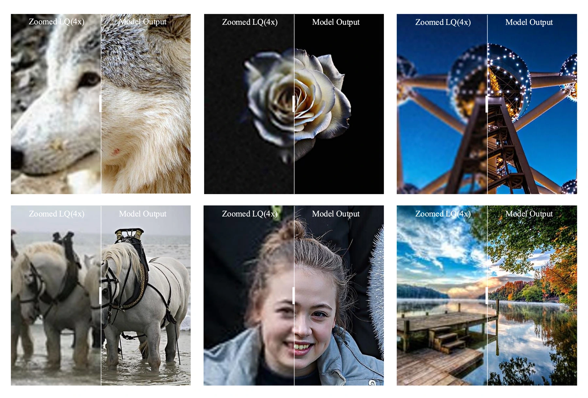

Large text-to-image models contain powerful visual priors, but using them effectively for restoration requires conditioning them on a particular damaged image. ResFlow-Tuner asks how additional inference-time computation can improve this process.
大型文生图模型具有强大的视觉先验，但图像恢复还需要针对具体受损图像提供有效条件。ResFlow-Tuner 研究如何利用额外的推理计算改善这一过程。
This turns restoration into a question about how to use a fixed model: can feedback during inference improve the trajectory toward a reconstruction?
这把复原转化为如何使用既有模型的问题：推理过程中的反馈能否改善通向重建结果的轨迹？
Adapting a generative prior to restoration让生成先验适应复原
The framework builds on FLUX.1-dev. Unified multimodal fusion encodes different conditions into a shared sequence for the diffusion transformer. A separate, training-free test-time scaling procedure uses reward-model feedback to steer the denoising direction during inference.
框架基于 FLUX.1-dev 构建，将不同模态条件编码为统一序列，供扩散 Transformer 使用。另一个无需额外训练的测试时扩展过程，利用奖励模型的反馈动态引导去噪方向。
Conditioning and test-time refinement solve different parts of the problem. Unified fusion determines how the model receives the degraded image and semantic context. Reward-guided refinement then adjusts the direction of an ongoing reconstruction. This separation makes it possible to retain a strong pretrained generative backbone while controlling how much extra work is spent on a particular input, rather than retraining the entire model for each restoration decision.
条件融合与测试时细化解决不同问题：统一融合决定模型如何接收退化图像和语义上下文，奖励引导则调整正在进行的重建方向。两者分开后，可以保留强大的预训练生成骨干，并针对具体输入控制额外计算，而不必为每次恢复决策重新训练整个模型。
{kind=link}

Spending inference compute on feedback将推理计算用于反馈
The paper separates three design choices in its ablations: how the low-quality image and text are fused, which reward signals steer restoration, and how much test-time computation is spent. On LSDIR-Val, it varies the refinement budget rather than comparing only one final configuration. OCR evaluation provides an additional structural check: sharper-looking text is useful only if the recognized content is also more accurate.
消融实验分别检验低质图像与文本如何融合、采用哪些奖励信号，以及投入多少测试时计算。在 LSDIR-Val 上，论文改变细化预算，而不是只报告单一最终配置；OCR 实验进一步检查结构保真性，因为文字看起来更清晰，只有在识别内容也更准确时才有实际意义。
What changes with test-time scaling测试时扩展带来的变化
The LSDIR-Val ablation isolates the effect of test-time scaling: with K=4 and N=7, LPIPS falls from 0.4015 to 0.3721 and FID from 22.91 to 19.82 relative to no TTS. MUSIQ rises from 71.47 to 74.21. These gains require additional inference computation; the method offers a quality–cost trade-off rather than a free improvement.
在 LSDIR-Val 消融实验中，相比不使用 TTS，K=4、N=7 时 LPIPS 从 0.4015 降至 0.3721，FID 从 22.91 降至 19.82，MUSIQ 从 71.47 提升至 74.21。这些收益需要额外推理计算，体现的是质量与成本之间的权衡。
{kind=link}

More computation needs a useful objective更多计算需要有效目标
Test-time scaling turns restoration into a controllable allocation problem. More refinement may be appropriate for a difficult photograph, while a latency-sensitive application may prefer a smaller budget. Reward choice matters because optimization can favor what the reward model recognizes. The paper’s ablations therefore support a tunable method, not an unconditional promise that more inference always yields a better reconstruction.
测试时扩展使恢复成为可调节的计算分配问题：复杂照片可以投入更多细化，低延迟应用则可能采用更小预算。奖励模型的偏好也会影响优化方向。因此，实验支持的是一种可调方法，而不是推理计算越多就必然恢复得越好的承诺。
Paper & authors论文与作者
Cite this work
@misc{bai2026tuningrealworldimagerestoration,
title = {Tuning Real-World Image Restoration at Inference: A Test-Time Scaling Paradigm for
Flow Matching Models},
author = {Purui Bai
and Junxian Duan
and Pin Wang
and Jinhua Hao
and Ming Sun
and Chao Zhou
and Huaibo Huang},
year = {2026},
eprint = {2603.22027},
archivePrefix = {arXiv},
primaryClass = {cs.CV},
url = {https://arxiv.org/abs/2603.22027}
}